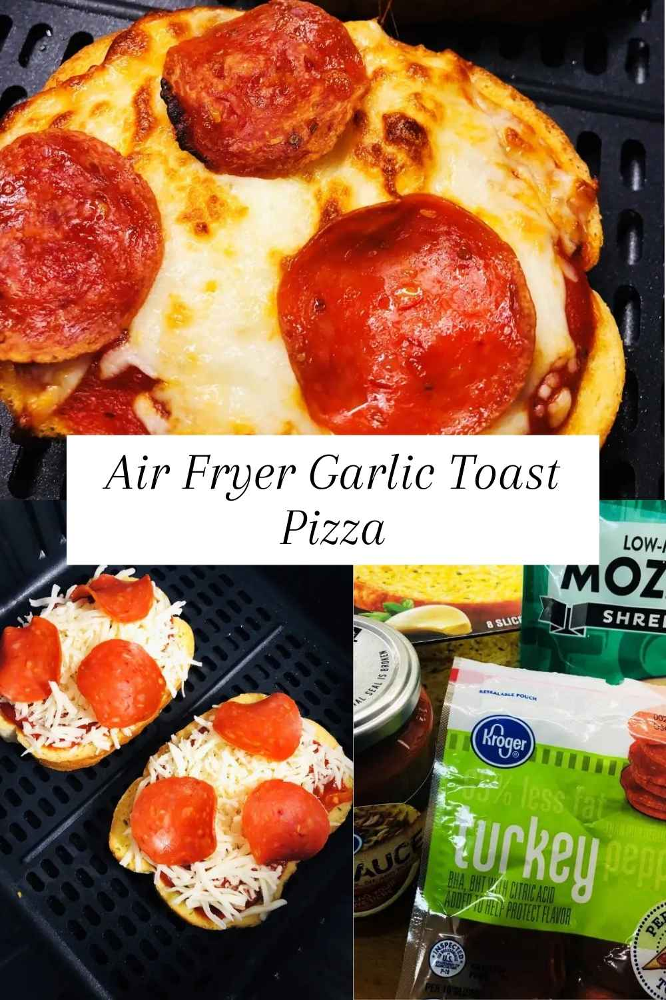

Description
A quick and delicious mini pizza made with crispy garlic toast, pizza sauce, melted mozzarella cheese, and pepperoni. Ready in just 6 minutes using an air fryer!

Ingredients
- 8 slices frozen garlic toast
- 1 jar (12 oz) pizza sauce
- 2 cups shredded mozzarella cheese
- 24 slices pepperoni
Steps
- Place 4 slices of garlic toast in the air fryer.
- Cook at 390°F (200°C) for 3 minutes.
- Remove the garlic toast and spread pizza sauce on each slice.
- Add shredded mozzarella cheese and 3 slices of pepperoni to each slice.
- Return the pizzas to the air fryer and cook at 390°F for another 3 minutes.
- Remove the pizzas and repeat with the remaining garlic toast.
- Serve hot and enjoy!